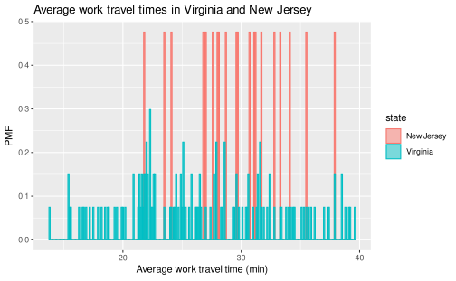
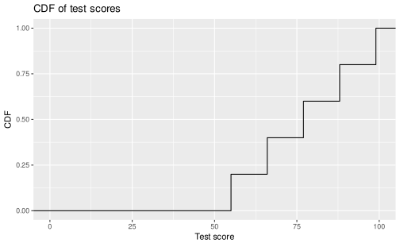

7.2 Cumulative distribution functions
7.2.1 The limits of probability mass functions
Probability mass functions (PMFs) work well if the number of unique values is small. But as the number of unique values increases, the probability associated with each value gets smaller and the effect of random noise increases.
Let’s recall that, in the previous reading, we plotted and compared PMFs of the average work travel time in Virginia and New Jersey, which resulted in this figure:

What happens if we choose binwidth = 0.1 for plotting the mean_work_travel distribution?
The values in mean_work_travel are reported to the first decimal place, so binwidth = 0.1 does not “smooth out” the data.
This increases the number of distinct values in mean_work_travel from 41 to 304.
The comparison between the Virginia and New Jersey PMFs will then look like this:

This visualization has a lot of spikes of similar heights, which makes this difficult to interpret and limits its usefulness. Also, it can be hard to see overall patterns; for example, what is the approximate difference in means between these two distributions?
This illustrates the tradeoff when using histograms and PMFs for visualizing single variables. If we smooth things out by using larger bin sizes, then we can lose information that may be useful. On the other hand, using small bin sizes creates plots like the one above, which is of limited (if any) utility.
An alternative that avoids these problems is the cumulative distribution function (CDF), which we turn to describing next. But before we discuss CDFs, we first have to understand the concept of percentiles.
7.2.2 Percentiles
If you have taken a standardized test, you probably got your results in the form of a raw score and a percentile rank. In this context, the percentile rank is the fraction of people who scored lower than you (or the same). So if you are “in the 90th percentile”, you did as well as or better than 90% of the people who took the exam.
As an example, say that you and 4 other people took a test and received the following scores:
55 66 77 88 99If you received the score of 88, then what is your percentile rank? We can calculate it as follows:
test_scores <- data_frame(score = combine(55, 66, 77, 88, 99))
number_of_tests <- test_scores %>%
count() %>%
pull(n)
number_of_lower_scores <- test_scores %>%
filter(score <= 88) %>%
count() %>%
pull(n)
percentile_rank <- 100.0 * number_of_lower_scores / number_of_testsFrom this, we find that the percentile rank for a score of 88 is 80. Mathematically, the calculation is \(100 \times \dfrac{4}{5} = 80\).
As you can see, if you are given a value, it is easy to find its percentile rank; going the other way is slightly harder.
One way to do this is to sort the scores and find the row number that corresponds to a percentile rank.
To find the row number, divide the total number of scores by 100, multiply that number by the desired percentile rank, and then round up to the nearest integer value.
The rounding up operation can be handled via the ceiling() function.
So, for our example, the value with percentile rank 55 is:
percentile_rank_row_number <- ceiling(55 * number_of_tests / 100)
test_scores %>%
arrange(score) %>%
slice(percentile_rank_row_number)| score |
|---|
| 77 |
The result of this calculation is called a percentile. So this means that, in the distribution of exam scores, the 55th percentile corresponds to a score of 77.
In R, there is a function called quantile() that can do the above calculation automatically, although you need to take care with the inputs.
Let’s first show what happens when we aren’t careful.
We might think that we can calculate the 55th percentile by running:
| x | |
|---|---|
| 55% | 79.2 |
We get a score of 79.2, which isn’t in our dataset.
This happens because quantile() interpolates between the scores by default.
Sometimes you will want this behavior, other times you will not.
When the dataset is this small, it doesn’t make as much sense to permit interpolation, as it can be based on rather aggressive assumptions about what intermediate scores might look like.
To tell quantile() to compute scores in the same manner as we did above, add the input type = 1:
| x | |
|---|---|
| 55% | 77 |
This, as expected, agrees with the manual calculation.
It is worth emphasizing that the difference between “percentile” and “percentile rank” can be confusing, and people do not always use the terms precisely. To summarize, if we want to know the percentage of people obtained scores equal to or lower than ours, then we are computing a percentile rank. If we start with a percentile, then we are computing the score in the distribution that corresponds with it.
7.2.3 CDFs
Now that we understand percentiles and percentile ranks, we are ready to tackle the cumulative distribution function (CDF). The CDF is the function that maps from a value to its percentile rank. To find the CDF for any particular value in our distribution, we compute the fraction of values in the distribution less than or equal to our selected value. Computing this is similar to how we calculated the percentile rank, except that the result is a probability in the range 0 – 1 rather than a percentile rank in the range 0 – 100. For our test scores example, we can manually compute the CDF in the following way:
| score | cdf |
|---|---|
| 55 | 0.2 |
| 66 | 0.4 |
| 77 | 0.6 |
| 88 | 0.8 |
| 99 | 1.0 |
The visualization of the CDF looks like:

As you can see, the CDF of a sample looks like a sequence of steps. Appropriately enough, this is called a step function, and the CDF of any sample is a step function.
Also note that we can evaluate the CDF for any value, not just values that appear in the sample. If we select a value that is less than the smallest value in the sample, then the CDF is 0. If we select a value that is greater than the largest value, then the CDF is 1.
7.2.4 Representing CDFs
While it’s good to know how to manually compute the CDF, we can construct the CDF of a sample automatically using the geom_step() function if we include stat = "ecdf" as an additional input.
Let’s use this to look at the CDF for the average work travel time for the full dataset:
county_complete %>%
ggplot() +
geom_step(mapping = aes(x = mean_work_travel), stat = "ecdf") +
labs(y = "CDF")With this plot we can easily specify an average work travel time percentile and read the associated time from the plot and vice-versa.
7.2.5 Comparing CDFs
CDFs are especially useful for comparing distributions. Let’s revisit the comparison we made between the average work travel times in Nebraska and Iowa. Here is the full code that converts those distributions into CDFs:
county_complete %>%
filter(state == "Nebraska" | state == "Iowa") %>%
ggplot() +
geom_step(
mapping = aes(x = mean_work_travel, color = state),
stat = "ecdf"
) +
labs(y = "CDF")
This visualization makes the shapes of the distributions and the relative differences between them much clearer. We see that Nebraska has shorter average work travel times for most of the distribution, at least until you reach an average time of 25 minutes, after which the Nebraska and Iowa distributions become similar to one another.
While it takes some time to get used to CDFs, it is worth the effort to do so as they show more information, more clearly, than PMFs.